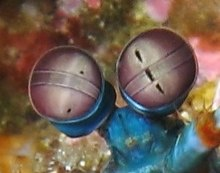

Fatos sobre o Stomatopoda
Informações gerais
Stomatopoda (ou estomatópode), nome científico Odontodactylus scyllarus, chamados popularmente de tamarutacas ou de lacraias-do-mar no Brasil, é uma ordem de crustáceos marinhos da subclasse Hoplocarida, que agrupa cerca de 400 espécies, caracterizadas principalmente pela morfologia da segunda pata torácica, que é modificada em apêndice subquelado, lembrando uma pata de louva-a-deus.
| Reino | Animalia |
| Filo | Arthropoda |
| Subfilo | Crustacea |
| Classe | Malacostraca |
| Subclasse | Hoplocarida |
| Ordem | Stomatopoda |
Fatos Interessantes
Eyes
The eyes of the mantis shrimp are mounted on mobile stalks and can move independently of each other. They are thought to have the most complex eyes in the animal kingdom and have the most complex visual system ever discovered.[12][13][14] Compared with the three types of photoreceptor cells that humans possess in their eyes, the eyes of a mantis shrimp have between 12 and 16 types of photoreceptor cells. Furthermore, some of these shrimp can tune the sensitivity of their long-wavelength colour vision to adapt to their environment.
Smashers
Possess a much more developed club and a more rudimentary spear (which is nevertheless quite sharp and still used in fights between their own kind); the club is used to bludgeon and smash their meals apart. The inner aspect of the terminal portion of the appendage can also possess a sharp edge, used to cut prey while the mantis shrimp swims.
Spearers
Both types strike by rapidly unfolding and swinging their raptorial claws at the prey, and can inflict serious damage on victims significantly greater in size than themselves. In smashers, these two weapons are employed with blinding quickness, with an acceleration of 10,400 g (102,000 m/s2 or 335,000 ft/s2) and speeds of 23 m/s (83 km/h; 51 mph) from a standing start.